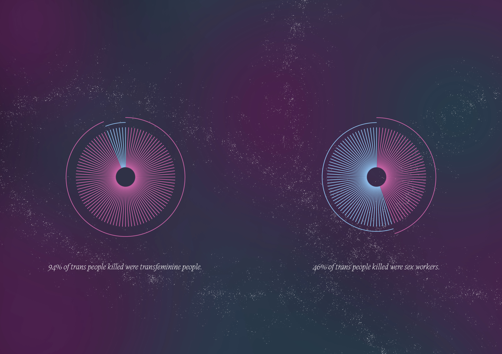

YOU WERE ALL STARS (2025)
You were all stars exists as an archive of trans people who died and/or were murdered in the period of TDOR 2024 (Oct‘23 - Sep’24). It is a way to mourn and to remember how important it is to fight for trans rights, to stop living in a world of constant erasure. This was an 868 page monument, a brick, exploring the book as an object. It was and always will be the saddest project that I have worked on. Every page felt like a cut, a devastating journey, but also an important archive of our community. I wish that it was shorter, that fewer trans people died, but this is the world we live in.
